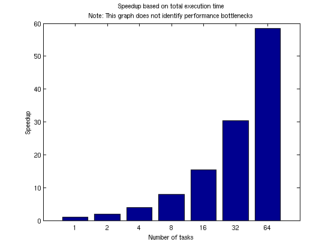
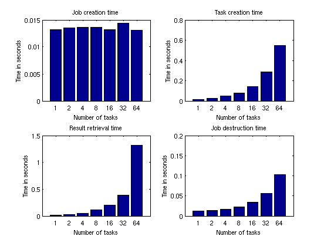
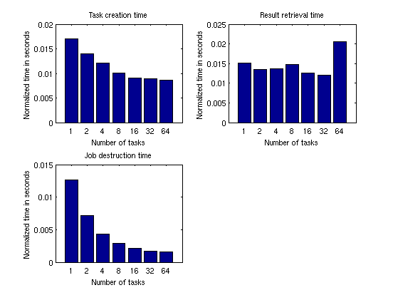
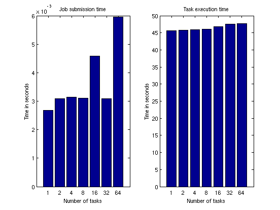
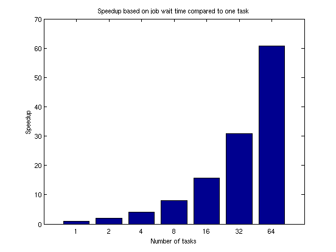
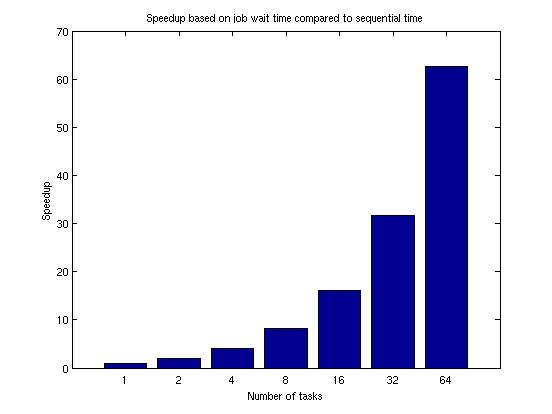
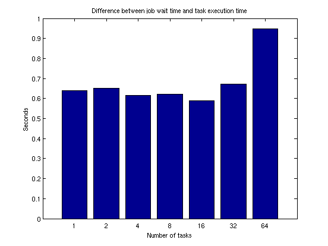
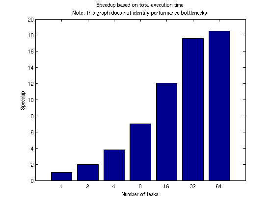

Benchmarking Distributed Jobs on the Cluster
In this demo, we show how to benchmark an application using distributed jobs on the cluster, and we analyze the results in some detail. In particular, we:
- Show how to benchmark a mixture of sequential code and task parallel code.
- Explain strong and weak scaling.
- Discuss some of the potential bottlenecks, both on the client and on the cluster.
Note: If you run this demo on a large cluster, it might take an hour to run.
Related demos:
Contents
- Check the Cluster Configuration
- Timing
- Choosing Problem Size
- Weak Scaling Measurements
- Sequential Execution
- Speedup Based on Weak Scaling and Total Execution Time
- Detailed Graphs, Part 1
- Normalized Times
- Detailed Graphs, Part 2
- Speedup Based on Weak Scaling and Job Wait Time
- Comparing Job Wait Time with Task Execution Time
- Strong Scaling Measurements
- Speedup Based on Strong Scaling and Total Execution Time
- Alternative for Short Tasks: Parfor
- Speedup Based on Strong Scaling with Parfor
- Summary
The code shown in this demo can be found in this function:
function paralleldemo_distribjob_bench
Check the Cluster Configuration
Before we interact with the scheduler, we verify that the MATLAB® client is configured according to our needs.
scheduler = findResource(); if isempty(scheduler) || length(scheduler(:)) > 1 error('distcomp:demo:InvalidConfiguration', ... ['Could not find a unique scheduler when using the ' ... 'default parallel configuration.']); end
Timing
We time all operations separately to allow us to inspect them in detail. We will need all those detailed timings to understand where the time is spent, and to isolate the potential bottlenecks. For the purposes of the demo, the actual function we benchmark is not very important; in this case we simulate hands of the card game blackjack or 21.
We write all of the operations to be as efficient as possible. For example, we use vectorized task creation. We use tic and toc for measuring the elapsed time of all the operations instead of using the job and task properties CreateTime, StartTime, FinishTime, etc., because tic and toc give us sub-second granularity. Note that we have also instrumented the task function so that it returns the time spent executing our benchmark computations.
function [times, description] = timeJob(sched, numTasks, numHands) % The code that creates the job and its tasks executes sequentially in % the MATLAB client starts here. % We first measure how long it takes to create a job. timingStart = tic; start = tic; job = createJob(sched); times.jobCreateTime = toc(start); description.jobCreateTime = 'Job creation time'; % Create all the tasks in one call to createTask, and measure how long % that takes. start = tic; taskArgs = repmat({{numHands, 1}}, numTasks, 1); createTask(job, @pctdemo_task_blackjack, 2, taskArgs); times.taskCreateTime = toc(start); description.taskCreateTime = 'Task creation time'; % Measure how long it takes to submit the job to the cluster. start = tic; submit(job); times.submitTime = toc(start); description.submitTime = 'Job submission time'; % Once the job has been submitted, we hope all its tasks execute in % parallel. We measure how long it takes for all the tasks to start % and to run to completion. start = tic; wait(job); times.jobWaitTime = toc(start); description.jobWaitTime = 'Job wait time'; % Tasks have now completed, so we are again executing sequential code % in the MATLAB client. We measure how long it takes to retrieve all % the job results. start = tic; results = getAllOutputArguments(job); times.resultsTime = toc(start); description.resultsTime = 'Result retrieval time'; % Verify that the job ran without any errors. if ~all(cellfun(@isempty, get(job.Tasks, {'ErrorMessage'}))) taskErrorMsgs = pctdemo_helper_getUniqueErrors(job); destroy(job); error('distcomp:demo:JobErrored', ... ['The following error(s) occurred during task ' ... 'execution:\n\n%s'], taskErrorMsgs); end % Get the execution time of the tasks. Our task function returns this % as its second output argument. times.exeTime = max([results{:,2}]); description.exeTime = 'Task execution time'; % Measure how long it takes to destroy the job and all its tasks. start = tic; destroy(job); times.destroyTime = toc(start); description.destroyTime = 'Job destruction time'; % Measure the total time elapsed from creating the job up to this % point. times.totalTime = toc(timingStart); description.totalTime = 'Total time'; times.numTasks = numTasks; description.numTasks = 'Number of tasks'; end
We look at some of the details of what we are measuring:
- Job creation time: The time it takes to create a job. For the job manager, this involves a remote call, and the job manager allocates space in its data base. For other schedulers, job creation involves writing a few files to disk.
- Task creation time: The time it takes to create and save the task information. The job manager saves this in its data base, whereas other schedulers save it in files on the file system.
- Job submission time: The time it takes to submit the job. For the job manager, we tell it to start executing the job it has in its data base. We ask the other schedulers to execute all the tasks we have created.
- Job wait time: The time we wait after the job submission until job completion. This includes all the activities that take place between job submission and when the job has completed, such as: scheduler may need to start all the workers and to send the workers the task information; the workers read the task information, and execute the task function. In the case of the job manager, the workers then send the task results to the job manager, which writes them to its data base, whereas for the other schedulers, the workers write the task results to disk.
- Task execution time: The time spent simulating blackjack. We instrument the task function to accurately measure this time. This time is also included in the job wait time.
- Results retrieval time: The time it takes to bring the job results into the MATLAB client. For the job manager, we obtain them from its data base. For other schedulers, we read them from the file system.
- Job destruction time: The time it takes to delete all the job and task information. The job manager deletes it from its data base. For the other schedulers, we delete the files from the file system.
- Total time: The time it takes to perform all of the above.
Choosing Problem Size
We know that most schedulers are designed for batch execution of medium or long running jobs, so we deliberately try to have our benchmark calculations fall within that range. Yet, we do not want this demo to take hours to run, so we choose the problem size so that each task takes approximately 1 minute on our hardware, and we then repeat the timing measurements a few times for increased accuracy. As a rule of thumb, if your calculations in a task take much less than a minute, you should consider whether parfor meets your low-latency needs better than jobs and tasks.
numHands = 1e5; numReps = 5;
We explore speedup by running on a different number of workers, starting with 1, 2, 4, 8, 16, etc., and ending with as many workers as we can possibly use. In this demo, we assume that we have dedicated access to the cluster for the benchmarking, and that the scheduler's ClusterSize property has been set correctly. Assuming that to be the case, each task will execute right away on a dedicated worker, so we can equate the number of tasks we submit with the number of workers that execute them.
clusterSize = scheduler.ClusterSize; if isinf(clusterSize) || (clusterSize == 0) error('distcomp:demo:InvalidClusterSize', ... ['Cannot deduce the cluster size from the scheduler. ' ... 'Set the ClusterSize on your default configuration to be ' ... 'a value other than 0 or inf.']); end numTasks = [pow2(0:ceil(log2(clusterSize) - 1)), clusterSize];
Weak Scaling Measurements
We vary the number of tasks in a job, and have each task perform a fixed amount of work. This is called weak scaling, and is what we really care the most about, because we usually scale up to the cluster to solve larger problems. It should be compared with the strong scaling benchmarks shown later in this demo. Speedup based on weak scaling is also known as scaled speedup.
fprintf(['Starting weak scaling timing. ' ... 'Submitting a total of %d jobs.\n'], numReps*length(numTasks)); for j = 1:length(numTasks) n = numTasks(j); for itr = 1:numReps [rep(itr), description] = timeJob(scheduler, ... n, numHands); %#ok<AGROW> end % Retain the iteration with the lowest total time. totalTime = [rep.totalTime]; fastest = find(totalTime == min(totalTime), 1); weak(j) = rep(fastest); %#ok<AGROW> fprintf('Job wait time with %d task(s): %f seconds\n', ... n, weak(j).jobWaitTime); end
Starting weak scaling timing. Submitting a total of 35 jobs. Job wait time with 1 task(s): 46.312904 seconds Job wait time with 2 task(s): 46.373968 seconds Job wait time with 4 task(s): 46.578428 seconds Job wait time with 8 task(s): 46.760492 seconds Job wait time with 16 task(s): 47.448570 seconds Job wait time with 32 task(s): 48.156771 seconds Job wait time with 64 task(s): 48.714422 seconds
Sequential Execution
We measure the sequential execution time of the computations. Note that this time should be compared to the execution time on the cluster only if they have the same hardware and software configuration.
seqTime = inf; for itr = 1:numReps start = tic; pctdemo_task_blackjack(numHands, 1); seqTime = min(seqTime, toc(start)); end fprintf('Sequential execution time: %f seconds\n', seqTime);
Sequential execution time: 47.645376 seconds
Speedup Based on Weak Scaling and Total Execution Time
We first look at the overall speedup achieved by running on different numbers of workers. The speedup is based on the total time used for the computations, so it includes both the sequential and the parallel portions of our code.
This speedup curve represents the capabilities of multiple items with unknown weights associated with each of them: The cluster hardware, the cluster software, the client hardware, the client software, and the connection between the client and the cluster. Therefore, the speedup curve does not represent any one of these, but all taken together.
If the speedup curve meets your desired performance targets, you know that all the aforementioned factors work well together in this particular benchmark. However, if the speedup curve fails to meet your targets, you do not know which of the many factors listed above is the most to blame. It could even be that the approach taken in the parallelization of the application is to blame rather than either the other software or hardware.
All too often, novices believe that this single graph gives the complete picture of the performance of their cluster hardware or software. This is indeed not the case, and one always needs to be aware that this graph does not allow us to draw any conclusions about potential performance bottlenecks.
titleStr = sprintf(['Speedup based on total execution time\n' ... 'Note: This graph does not identify performance ' ... 'bottlenecks']); pctdemo_plot_distribjob('speedup', [weak.numTasks], [weak.totalTime], ... weak(1).totalTime, titleStr);
Detailed Graphs, Part 1
We dig a little bit deeper and look at the times spent in the various steps of our code. We benchmarked weak scaling, that is, the more tasks we create, the more work we perform. Therefore, the size of the task output data increases as we increase the number of tasks. With that in mind, we expect the following to take longer the more tasks we create:
- Task creation
- Retrieval of job output arguments
- Job destruction time
We have no reason to believe that the following increases with the number of tasks:
- Job creation time
After all, the job is created before we define any of its tasks, so there is no reason why it should vary with the number of tasks. We might expect to see only some random fluctuations in the job creation time.
pctdemo_plot_distribjob('fields', weak, description, ... {'jobCreateTime', 'taskCreateTime', 'resultsTime', 'destroyTime'}, ... 'Time in seconds');
Normalized Times
We already concluded that task creation time is expected to increase as we increase the number of tasks, as does the time to retrieve job output arguments and to destroy the job. However, this increase is due to the fact that we are performing more work as we increase the number of workers/tasks. It is therefore meaningful to measure the efficiency of these three activities by looking at the time it takes to perform these operations, and normalize it by the number of tasks. This way, we can look to see if any of the following times stay constant, increase, or decrease as we vary the number of tasks:
- The time it takes to create a single task
- The time it takes to retrieve output arguments from a single task
- The time it takes to destroy a task in a job
The normalized times in this graph represent the capabilities of the MATLAB client and the portion of the cluster hardware or software that it might interact with. It is generally considered good if these curves stay flat, and excellent if they are decreasing.
pctdemo_plot_distribjob('normalizedFields', weak, description, ... {'taskCreateTime', 'resultsTime', 'destroyTime'});
These graphs sometimes show that the time spent retrieving the results per task goes down as the number of tasks increases. That is undeniably good: We become more efficient the more work we perform. This might happen if there is a fixed amount of overhead for the operation and if it takes a fixed amount of time per task in the job.
We cannot expect a speedup curve based on total execution time to look particularly good if it includes a significant amount of time spent on sequential activities such as the above, where the time spent increases with the number of tasks. In that case, the sequential activities will dominate once there are sufficiently many tasks.
Detailed Graphs, Part 2
It is possible that the time spent in each of following steps varies with the number of tasks, but we hope it does not:
- Job submission time.
- Task execution time. This captures the time spent simulating blackjack. Nothing more, nothing less.
In both cases, we look at the elapsed time, also referred to as wall clock time. We look at neither the total CPU time on the cluster nor the normalized time.
pctdemo_plot_distribjob('fields', weak, description, ... {'submitTime', 'exeTime'});
There are situations where each of the times shown above could increase with the number of tasks. For example:
- With some third-party schedulers, the job submission involves one system call for each task in the job, or the job submission involves copying files across the network. In those cases, the job submission time may increase linearly with the number of tasks.
- The graph of the task execution time is the most likely to expose hardware limitations and resource contention. For example, the task execution time could increase if we are executing multiple workers on the same computer, due to contention for limited memory bandwidth. Another example of resource contention is if the task function were to read or write large data files using a single, shared file system. The task function in this demo, however, does not access the file system at all. These types of hardware limitations are covered in great detail in the demo Resource Contention in Task Parallel Problems.
Speedup Based on Weak Scaling and Job Wait Time
Now that we have dissected the times spent in the various stages of our code, we want to create a speedup curve that more accurately reflects the capabilities of our cluster hardware and software. We do this by calculating a speedup curve based on the job wait time.
When calculating this speedup curve based on the job wait time, we first compare it to the time it takes to execute a job with a single task on the cluster.
titleStr = 'Speedup based on job wait time compared to one task'; pctdemo_plot_distribjob('speedup', [weak.numTasks], [weak.jobWaitTime], ... weak(1).jobWaitTime, titleStr);
Job wait time might include the time to start all the MATLAB workers. It is therefore possible that this time is bounded by the IO capabilities of a shared file system. The job wait time also includes the average task execution time, so any deficiencies seen there also apply here. If we do not have dedicated access to the cluster, we could expect the speedup curve based on job wait time to suffer significantly.
Next, we compare the job wait time to the sequential execution time, assuming that the hardware of the client computer is comparable to the compute nodes. If the client is not comparable to the cluster nodes, this comparison is absolutely meaningless. If your scheduler has a substantial time lag when assigning tasks to workers, e.g., by assigning tasks to workers only once per minute, this graph will be heavily affected because the sequential execution time does not suffer this lag. Note that this graph will have the same shape as the previous graph, they will only differ by a constant, multiplicative factor.
titleStr = 'Speedup based on job wait time compared to sequential time'; pctdemo_plot_distribjob('speedup', [weak.numTasks], [weak.jobWaitTime], ... seqTime, titleStr);
Comparing Job Wait Time with Task Execution Time
As we have mentioned before, the job wait time consists of the task execution time plus scheduling, wait time in the scheduler's queue, MATLAB startup time, etc. On an idle cluster, the difference between the job wait time and task execution time should remain constant, at least for small number of tasks. As the number of tasks grows into the tens, hundreds, or thousands, we are bound to eventually run into some limitations. For example, once we have sufficiently many tasks/workers, the scheduler cannot tell all the workers simultaneously to start executing their task, or if the MATLAB workers all use the same file system, they might end up saturating the file server.
titleStr = 'Difference between job wait time and task execution time'; pctdemo_plot_distribjob('barTime', [weak.numTasks], ... [weak.jobWaitTime] - [weak.exeTime], titleStr);
Strong Scaling Measurements
We now measure the execution time of a fixed-size problem, while varying the number of workers we use to solve the problem. This is called strong scaling, and it is well known that if an application has any sequential parts, there is an upper limit to the speedup that can be achieved with strong scaling. This is formalized in Amdahl's law, which has been widely discussed and debated over the years.
You can easily run into the limits of speedup with strong scaling when submitting jobs to the cluster. If the task execution has a fixed overhead (which it ordinarily does), even if it is as little as one second, the execution time of our application will never go below one second. In our case, we start with an application that executes in approximately 60 seconds on one MATLAB worker. If we divide the computations among 60 workers, it might take as little as one second for each worker to compute its portion of the overall problem. However, the hypothetical task execution overhead of one second has become a major contributor to the overall execution time.
Unless your application runs for a long time, jobs and tasks are usually not the way to achieve good results with strong scaling. If the overhead of task execution is close to the execution time of your application, you should investigate whether parfor meets your requirements. Even in the case of parfor, there is a fixed amount of overhead, albeit much smaller than with regular jobs and tasks, and that overhead limits to the speedup that can be achieved with strong scaling. Your problem size relative to your cluster size may or may not be so large that you experience those limitations.
As a general rule of thumb, it is only possible to achieve strong scaling of small problems on large numbers of processors with specialized hardware and a great deal of programming effort.
fprintf(['Starting strong scaling timing. ' ... 'Submitting a total of %d jobs.\n'], numReps*length(numTasks)) for j = 1:length(numTasks) n = numTasks(j); strongNumHands = ceil(numHands/n); for itr = 1:numReps rep(itr) = timeJob(scheduler, n, strongNumHands); %#ok<AGROW> end ind = find([rep.totalTime] == min([rep.totalTime]), 1); strong(n) = rep(ind); %#ok<AGROW> fprintf('Job wait time with %d task(s): %f seconds\n', ... n, strong(n).jobWaitTime); end
Starting strong scaling timing. Submitting a total of 35 jobs. Job wait time with 1 task(s): 46.440557 seconds Job wait time with 2 task(s): 23.496714 seconds Job wait time with 4 task(s): 12.215749 seconds Job wait time with 8 task(s): 6.439550 seconds Job wait time with 16 task(s): 3.592597 seconds Job wait time with 32 task(s): 2.166315 seconds Job wait time with 64 task(s): 1.542021 seconds
Speedup Based on Strong Scaling and Total Execution Time
As we have already discussed, speedup curves that depict the sum of the time spent executing sequential code in the MATLAB client and time executing parallel code on the cluster can be very misleading. The following graph shows this information in the worst-case scenario of strong scaling. We deliberately chose the original problem to be so small relative to our cluster size that the speedup curve would look bad. Neither the cluster hardware nor software was designed with this kind of a use in mind.
titleStr = sprintf(['Speedup based on total execution time\n' ... 'Note: This graph does not identify performance ' ... 'bottlenecks']); pctdemo_plot_distribjob('speedup', [strong.numTasks], ... [strong.totalTime].*[strong.numTasks], strong(1).totalTime, titleStr);
Alternative for Short Tasks: Parfor
The strong scaling results did not look good because we deliberately used jobs and tasks to execute calculations of short duration. We now look at how parfor applies to that same problem. Note that we do not include the time it takes to open the pool in our time measurements.
matlabpool('open', clusterSize); parforTime = inf; strongNumHands = ceil(numHands/clusterSize); for itr = 1:numReps start = tic; r = cell(1, clusterSize); parfor i = 1:clusterSize r{i} = pctdemo_task_blackjack(strongNumHands, 1); %#ok<PFOUS> end parforTime = min(parforTime, toc(start)); end matlabpool close
Starting matlabpool using the parallel configuration 'jobmanagerconfig1'. Waiting for parallel job to start... Connected to a matlabpool session with 64 labs. Sending a stop signal to all the labs... Waiting for parallel job to finish... Performing parallel job cleanup... Done.
Speedup Based on Strong Scaling with Parfor
The original, sequential calculations took approximately one minute, so each worker needs to perform only a few seconds of computations on a large cluster. We therefore expect strong scaling performance to be much better with parfor than with jobs and tasks.
fprintf('Execution time with parfor using %d workers: %f seconds\n', ... clusterSize, parforTime); fprintf(['Speedup based on strong scaling with parfor using ', ... '%d workers: %f\n'], clusterSize, seqTime/parforTime);
Execution time with parfor using 64 workers: 0.979494 seconds Speedup based on strong scaling with parfor using 64 workers: 48.642846
Summary
We have seen the difference between weak and strong scaling, and discussed why we prefer to look at weak scaling: It measures our ability to solve larger problems on the cluster (more simulations, more iterations, more data, etc.). The large number of graphs and the amount of detail in this demo should also be a testament to the fact that benchmarks cannot be boiled down to a single number or a single graph. We need to look at the whole picture to understand whether the application performance can be attributed to the application, the cluster hardware or software, or a combination of both.
We have also seen that for short calculations, parfor can be a great alternative to jobs and tasks. For more benchmarking results using parfor, see the demo Simple Benchmarking of Parfor Using Blackjack.
end